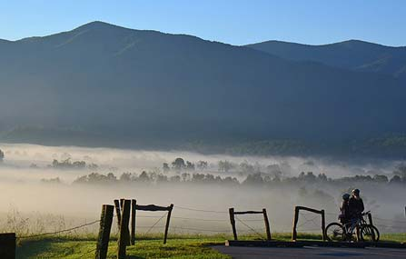
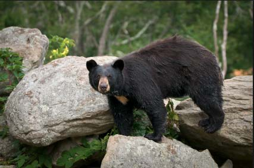

A Wondrous Diversity of Life
Ridge upon ridge of forest straddles the border between North Carolina and Tennessee in Great Smoky Mountains National Park. World renowned for its diversity of plant and animal life, the beauty of its ancient mountains, and the quality of its remnants of Southern Appalachian mountain culture, this is America's most visited national park.
What Can I Do In The Park?
Whether you delight in the challenge of a strenuous hike to the crest of a mountain or prefer to sit quietly and watch the sun set, Great Smoky Mountains National Park offers many activities for you to enjoy. The hardest part may be choosing which auto tour, trail, waterfall, overlook, or historic area to explore!
 learn moreCades Cove
Cades Cove is a broad, verdant valley surrounded by mountains and is one of the most popular destinations in the Great Smokies. It offers some of the best opportunities for wildlife viewing in the park. Large numbers of white-tailed deer are frequently seen, and sightings of black bear, coyote, ground hog, turkey, raccoon, skunk, and other animals are also possible.
 learn more
learn more
Wildflowers
Great Smoky Mountains National Park is a world-renowned preserve of wildflower diversity—over 1,500 kinds of flowering plants are found in the park, more than in any other North American national park. In fact, the park is sometimes referred to as the “Wildflower National Park."
learn moreCurious About Bears?
Great Smoky Mountains National Park is one of the largest protected areas in the Eastern United States where black bears can live in wild, natural surroundings.
 learn more